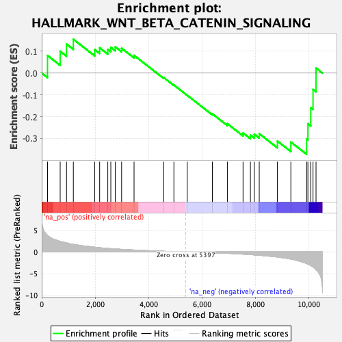
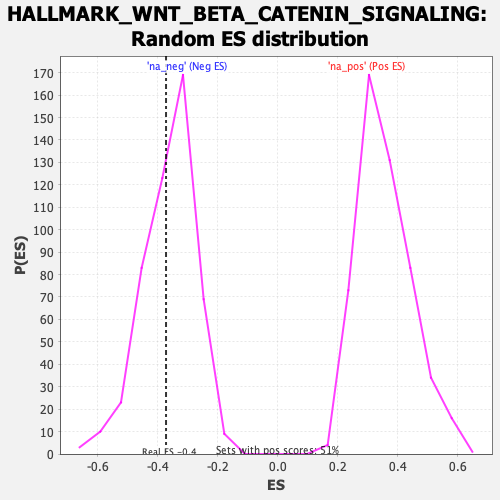

| Dataset | qlf.KOd4vsWTd4_gsea_score |
| Phenotype | NoPhenotypeAvailable |
| Upregulated in class | na_neg |
| GeneSet | HALLMARK_WNT_BETA_CATENIN_SIGNALING |
| Enrichment Score (ES) | -0.37258926 |
| Normalized Enrichment Score (NES) | -1.0259708 |
| Nominal p-value | 0.42535788 |
| FDR q-value | 0.5311082 |
| FWER p-Value | 1.0 |

| SYMBOL | RANK IN GENE LIST | RANK METRIC SCORE | RUNNING ES | CORE ENRICHMENT | |
|---|---|---|---|---|---|
| 1 | CCND2 | 217 | 3.831 | 0.0807 | No |
| 2 | RBPJ | 691 | 2.441 | 0.1001 | No |
| 3 | KAT2A | 928 | 2.095 | 0.1331 | No |
| 4 | MYC | 1183 | 1.748 | 0.1551 | No |
| 5 | CTNNB1 | 1985 | 1.091 | 0.1076 | No |
| 6 | SKP2 | 2168 | 0.974 | 0.1160 | No |
| 7 | HDAC2 | 2473 | 0.817 | 0.1086 | No |
| 8 | CUL1 | 2586 | 0.763 | 0.1181 | No |
| 9 | PTCH1 | 2754 | 0.690 | 0.1204 | No |
| 10 | AXIN1 | 2990 | 0.600 | 0.1139 | No |
| 11 | PSEN2 | 3456 | 0.444 | 0.0813 | No |
| 12 | HEY1 | 4568 | 0.150 | -0.0208 | No |
| 13 | PPARD | 4947 | 0.080 | -0.0547 | No |
| 14 | HDAC11 | 5446 | -0.007 | -0.1020 | No |
| 15 | HDAC5 | 6388 | -0.174 | -0.1872 | No |
| 16 | ADAM17 | 6948 | -0.314 | -0.2322 | No |
| 17 | NCOR2 | 7535 | -0.507 | -0.2747 | No |
| 18 | DVL2 | 7810 | -0.614 | -0.2846 | No |
| 19 | NCSTN | 7956 | -0.677 | -0.2805 | No |
| 20 | NUMB | 8141 | -0.759 | -0.2780 | No |
| 21 | CSNK1E | 8821 | -1.167 | -0.3119 | No |
| 22 | MAML1 | 9324 | -1.643 | -0.3163 | Yes |
| 23 | NOTCH1 | 9915 | -2.659 | -0.3022 | Yes |
| 24 | FRAT1 | 9962 | -2.802 | -0.2325 | Yes |
| 25 | AXIN2 | 10069 | -3.162 | -0.1589 | Yes |
| 26 | TCF7 | 10154 | -3.466 | -0.0752 | Yes |
| 27 | LEF1 | 10266 | -4.114 | 0.0231 | Yes |
